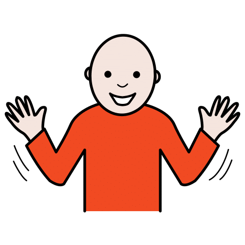
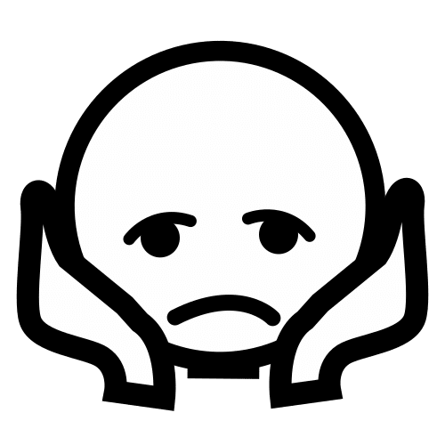

Comunicador
sentiment_satisfied_alt
Emociones

Feliz
Triste
Enfadado
Sorprendido
Asustado

Desanimado
local_dining
Necesidades Básicas
restaurant
Tengo hambre
help_outline
Necesito ayuda
wc
Quiero ir al baño
medical_services
Necesito un médico
hotel
Necesito descansar
quickreply
Respuestas Rápidas
thumb_up_alt
Sí
thumb_down_alt
No
check_circle_outline
Estoy bien
help_outline
No sé
thumbs_up_down
Tal vez
settings_voice
Selección de voz
Cerrar